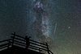

observation

Has synonym(s): observation
Definition: Observation in the natural sciences is an act or instance of noticing or perceiving and the acquisition of information from a primary source. In living beings, observation employs the senses. In science, observation can also involve the perception and recording of data via the use of scientific instruments. The term may also refer to any data collected during the scientific activity. Observations can be qualitative, that is, the absence or presence of a property is noted and the observed phenomenon described, or quantitative if a numerical value is attached to the observed phenomenon by counting or measuring.
Source: Wikipedia
Wikipedia Page (Something wrong with this association? Let us know.)
Wikidata Page (Something wrong with this association? Let us know.)
Occurs in: